Zusammenhang einer Ordnungstopologie
1. Satz
Sei 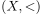 eine totalgeordnete Menge und  die Ordnungstopologie.
Dann ist
die Ordnungstopologie.
Dann ist  zusammenhängend g.d.w. das Dedekindsche Schnittaxiom erfüllt
zusammenhängend g.d.w. das Dedekindsche Schnittaxiom erfüllt
2. Beweis
2.1. a) Dedekind => Zusammenhang
Seien  mit
mit  und 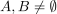.
Dann existieren
und 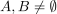.
Dann existieren  ,
,  mit o.B.d.A. 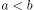.
Betrachten wir die Zusammenhangskomponenten
mit o.B.d.A. 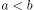.
Betrachten wir die Zusammenhangskomponenten
Wir können dann einen Dedekind Schnitt 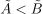 mit  , 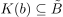 konstruieren.
Ferner existiert dann ein 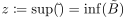
Dabei ist eine Umgebung von $
, 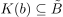 konstruieren.
Ferner existiert dann ein 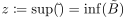
Dabei ist eine Umgebung von $
2.2. b)
Angenommen erfüllt nicht das Dedekindsche Schnittaxiom.
Dann existiert eine offene Zerlegung  mit 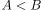, so dass eine der beiden Fälle zutritt:
mit 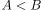, so dass eine der beiden Fälle zutritt:
Für 1) ist 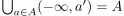 mit 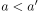, so dass 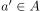 liegt wohldefiniert, da kein Supremum existiert
Für 2) gilt  eine offene Zerlegung, da 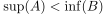 gilt.
eine offene Zerlegung, da 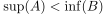 gilt.